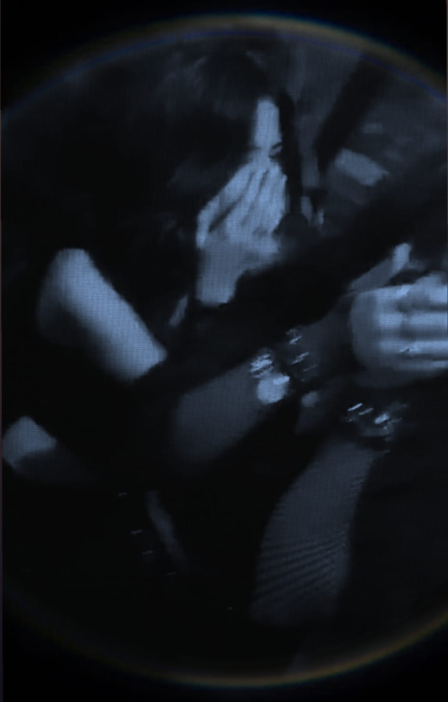
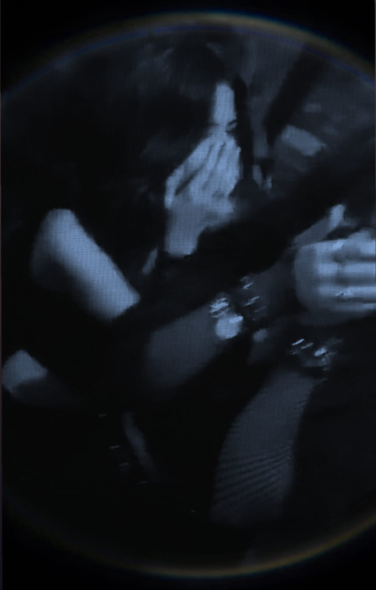
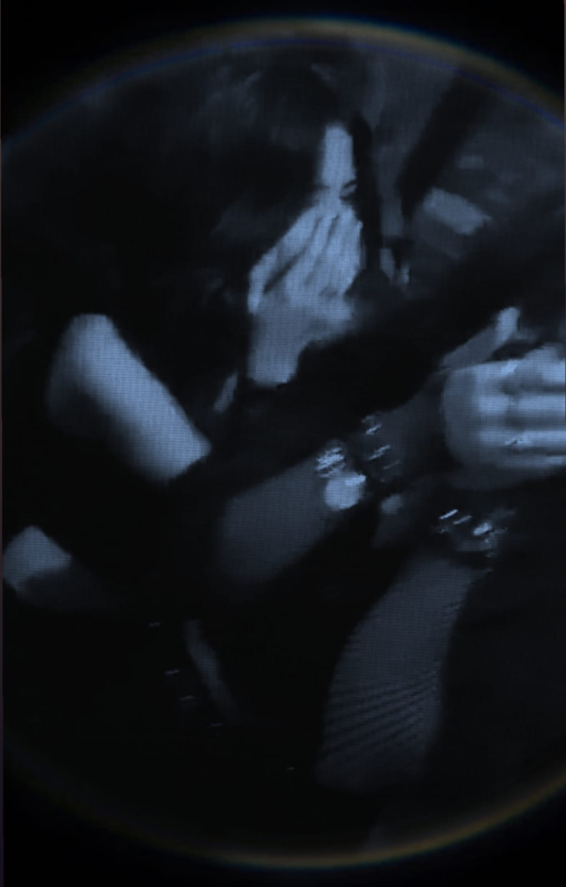

Creo que nunca te he dicho en especifico los motivos exactos del por qué me gustas y aprovechando que me puedo esconder detras d mis habilidades informaticas lo haré en algún tipo de carta que te representaré en forma de una página web para que veas lo teta que puedo llegar a ser y aprovechando que ya tengo mi certificado en esta mrd y q veas lo q aprendí a hacer, q no es mucho pero es trabajo honesto.
Tú
Tal vez no sea un motivo en especifico pero es que realmente el concepto tuyo me gusta demasiado, en eso va tu personalidad, tu manera de pensar, la esencia que transmites, tu complejidad, la manera en la que quieres y te preocupas por los demás, tu hermosa carita, tus ojos tan bonitos, tus pestañas tan hermosas, tu boca tan suave y perfecta, tus lunares bonitos, tus fukin besos adictivos, tu cabello precioso, tu manera tan chida de vestir que tienes, tus manos bonitas y tus dedos tan mordibles que tienes, tu cuerpo, tu cintura,tu risa, tu voz, tu sonrisa, tu humor, tus chistes y lo funable que eres, la forma en la que te tapas la cara cada que te ries, tu olor, los movimientos que haces cada que te da vergüenza algo, tus ataques de hiperactividad que te dan de repente,tu afecto pasivo agresivo, lo linda que te ves contándome cómo te fue,lo bien que me la paso contigo y la conexión que tenemos y las similitudes que tenemos en muchas cosas,lo rápido que te distraes de un tema y comienzas a hablar de uno completamente diferente, incluso hasta tu manera de burarte de todos me gusta, es que simplemente tú...
Excepcional
Las personas por lo regular no me interesan, no tienen algo que me llame la atención, pero tú si lo tienes, me interesa saber de ti, de tu pasado, de tu día a día y de lo que quieres en tu futuro, lo que piensas y te preocupa. De cierta manera para que alguien me llegue a gustar tengo que tener cierta admiración por la persona y aunque tú no notes esas cosas de ti, yo noto lo mucho que te esfuerzas y las veces que lo intentas cada vez que no te sale algo bien sigues tratando de alguna manera u otra. Me gusta como eres empatica y procuras ser lo más objetiva en cada situacion de desventaja que se te presenta, el como por lo regular no se te cierra el mundo y buscas como solucionar algo y más cuando se trata de la gente que quieres, que aunque parece simple no lo es teniendo en cuenta la vida que llevas y lo poco que le importa a la gente salir de donde esta, eso me parece muy atractivo de ti verdaderamente ya que la gente tiende a rendirse muy rápido. Tienes un hermoso corazón que seguramente pocos han valorado, cada cosa que me cuentas (cmo la vez del señor del bodega) me hace darme cuenta lo mucho que vales.
Tú pensar
Siento que este apartado se puede llegar a ver como los tipicos tripticos que te ponían en la escuela enseñandote los valores, pero creo que otra parte muy importante para que me guste alguien es compaginar en formas de pensar y creo que en la mayoría de cosas que hemos tratado pensamos de manera similar, como no estar de acuerdo con ciertas actitudes de la gente y sobre todo la manera de pensar rigida que tienes me gusta porque eso te hace ver como alguien segura de tus posturas (espero que eso no me afecte en el futuro jaja salu2) porque lo he notado hasta en la forma en que te relacionas con las demás personas y lo escéptica que eres con la gente. Eres muy buena amiga con tus amigos y tienes un pensamiento relativamente maduro para alguien de tu edad (me vale que solo sea un año) por los consejos que he visto que das y los que me dices a mí.

Que ganas de ser el payaso verdaderamente.
Día del centurias
#Envida
Cómo olvidar tu manera tan exótica de sostenerte en los camiones, simplemente enamora.
Día q te acompañé desde la 41
#Amo tu mano
Contigo conocí a los mejores tamales de dulce que jamás había probado, algo que se volvió digno de volver tradición entre nosotras.
Días q iba x ti a tu trabajo e ibamos x tamalitos d dulce
#Ya se me antojaron
Tu mimida como morillo en fiestas d adulto (craft).
Hasta así te ves bonita
#Si eres
Aunque no me gustan mucho las flores, las tuyas son las únicas que no he tirado.
La vez que me diste las flores amarillas d craft
#Awwwwww
Este fue el día que fui x ti a tu trabajo y terminamos explorando trenes abandonaos y la doña chismosa nos delató, fue muy improvisto pero lo amé.
Día de los trenes y el día q no te podías bajar del subemanos
#Descubrí que eres muy miedosa
El 14 de febrero que fuiste conmigo a la uni y me diste esos dibujitos, q amé uwu.
Día 14 de febrero
#M gusta todo lo q haces
Simplemente amé ese día, no pude haber tenido mejor compañía, la neta.
Día de Maldita vecindad
#T kiero ska
:o
:o
#:o
Creo que no se ven como garras pero fue lindo estar contigo en un día muy fumado.
Día de que fuimos al rolling
#Yo quería ir al Patinazo
Para que no digas que no te presumo.
Día de las toluqueñas
#q bonito abrazas
Creo que esta imagen es una de las pruebas que tengo donde claramente me la paso super bn contigo uwu pura risa y risa.
Q bonito t ries
#jaja q risa da la gente
Tú sales bien hasta comiendo, qpd.
Te obligué a comer, pero bueno
#El atole me gustó mucho pq era de guayaba
Que felices nos vemos comiendo y más felicidad fue haber compartido un elote y todavía re weno con vistas al lago, épico.
Mismo día Chaska Fest
#No sé morder elotes

El día que me mandaste chilaquiles a mi jale, nombre casi me orino.
Q buenos estaban lpm
#lloro
Banderillas coreanas y como siempre mi elección fue la mejor.
Arriba las banderillas coreanas
#Ramen god
Nuestras bonitas dates de bajo presupuesto en la uaa.
Me sentía en japón
#q bonito

Las llamadas que teníamos que aunque no fueron muchas, me gustaba hacer cada una de ellas aunque como tú, no me guste hablar x télefono .
Siempre teníamos problemas para hablar pero lo seguiamos intentando ajsaj
#no tengo una mejor captura
Otra foto de nuestras manitas con un fondo medio cutre pero el contexto de ese día fue lindo, no nos soltabamos ni pa' brincar.
Me cumpliste una fantasía y tu ni en cuenta
#Amé cada segundo de este día